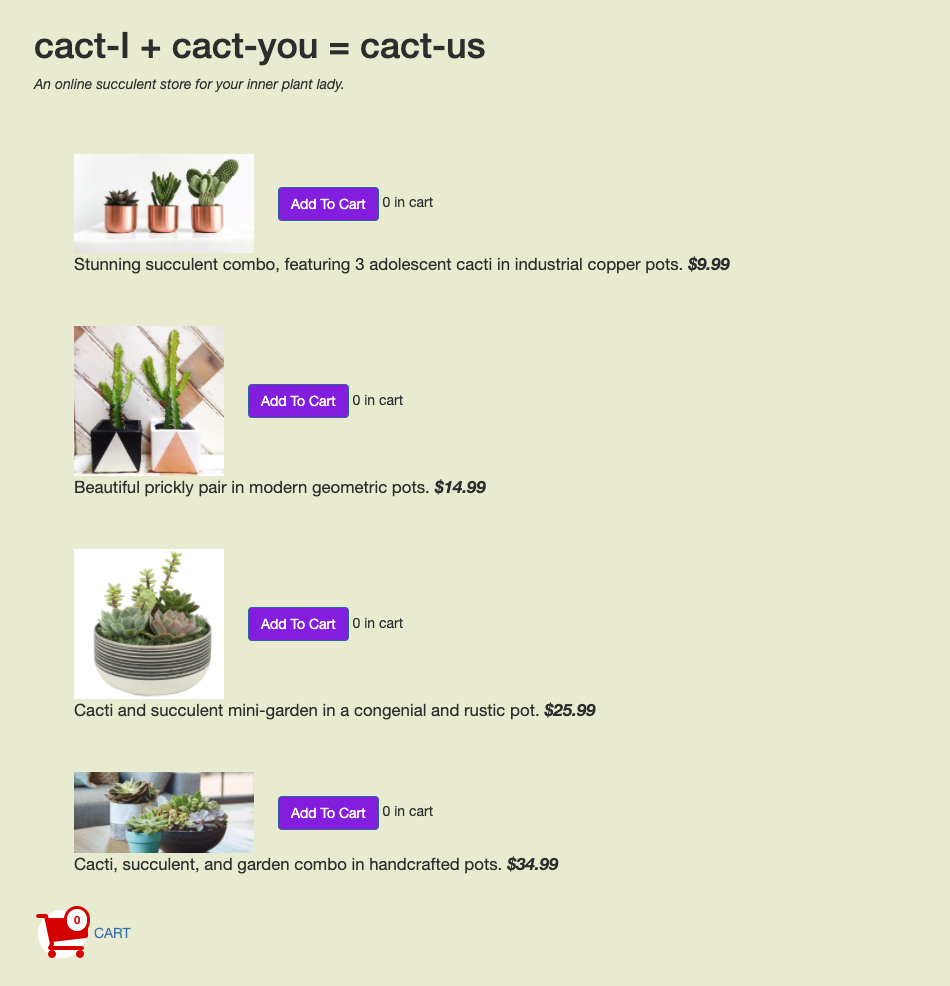
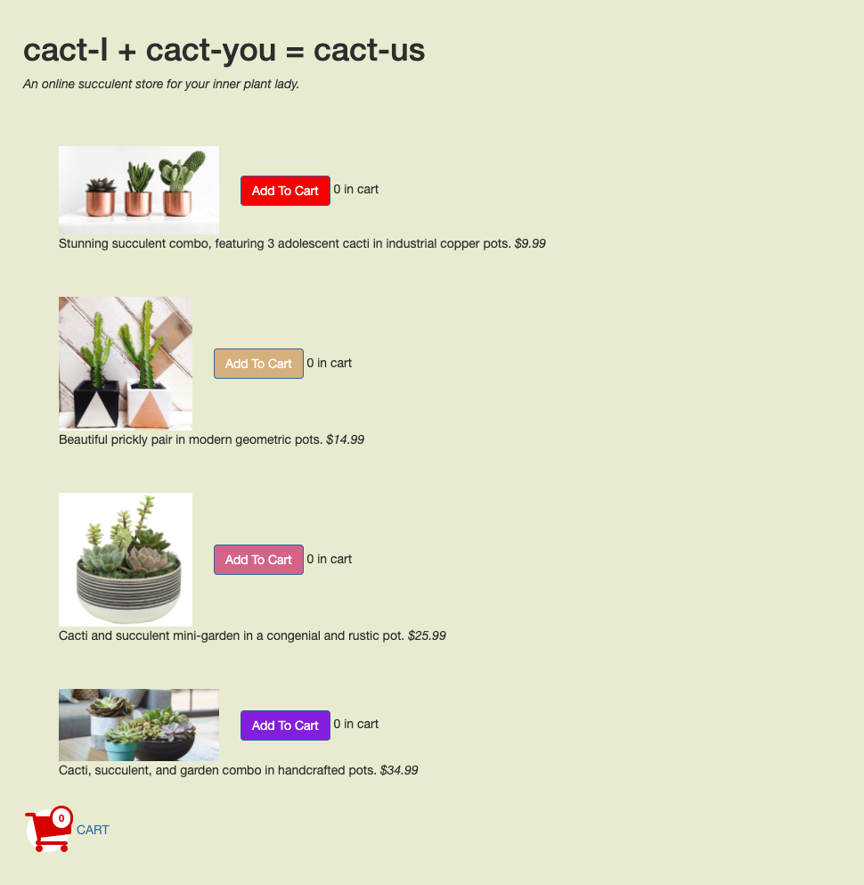

AB Testing
Today we will discover if the changes I have made on our cactus website has any positive impact on the user experience!
Deployment of the Website
A

B

Hypotheses
Time to Completion
Null Hypotheses
Variation B is NOT a meaningful improvement over Variation A.
Alternative Hypotheses
Variation B is a meaningful improvement over Variation A. This means that prototype A will have a higher time to completion rate because the lack of variation in colors make it harder for the user to distinguish between different components of the web page. This means prototype B will have a lower time to completion time since the variation of color between the buttons make it easy for the user to distinguis between each item.
Return Rate
Null Hypotheses
Variation B is NOT a meaningful improvement over Variation A.
Alternative Hypotheses
Variation B will have a lower return rate because the color scheme of the prototype includes bright colors which makes the user easly differentiate between the different cactus options. Variation of colors make the site memorable. When the user goes to the checkout page, they remember exactly what they clicked on, reducing the need to go back to the previous page.
Findings

Conclusion
What limitations do you think affected the results of your test?
It was a small sample size. There wasn’t a lot of variation between the prototypes . The environment of the experiment lacked circumstances that would make the user experience more realistic.
What do your results tell us about design principles in general (think affordances, navigation, etc.)?
In terms of affordances, prototype B showed that each button refers to a different cactus with a different price which made it easier for the user to navigate between different products. Prototype A had bold price tags which again contribute to a better user experience. In terms of navigation there wasn’t a significant change between the two prototypes which was reflected on return rates. There wasn’t a significant improvement from prototype A to prototype B.